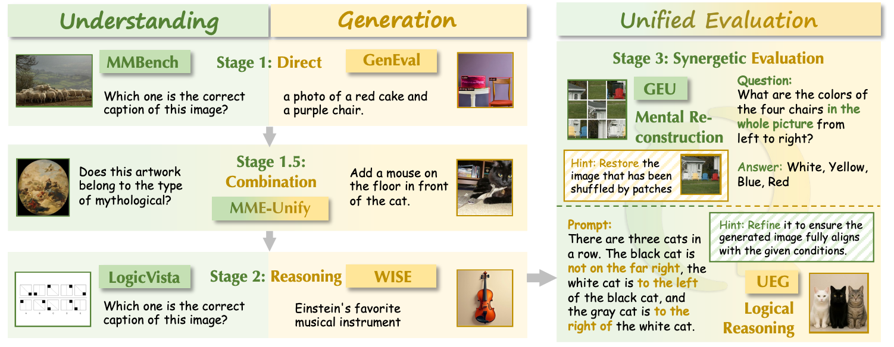
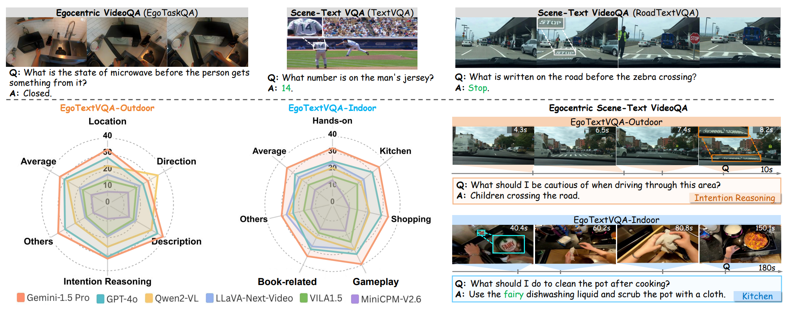
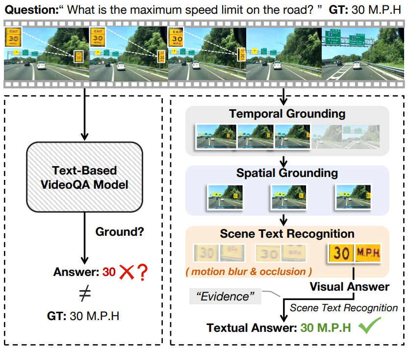
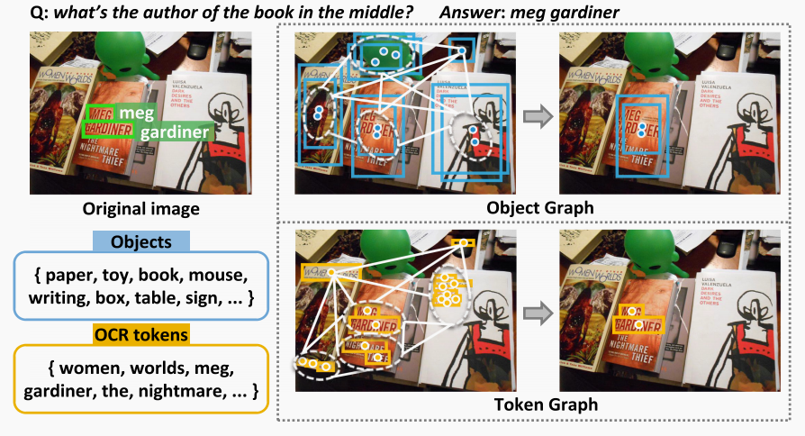
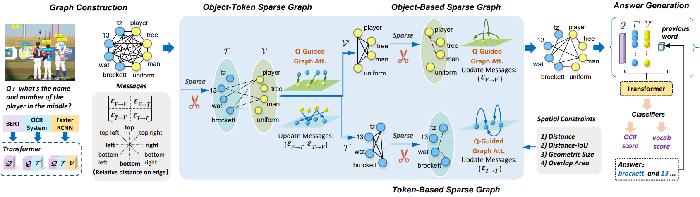

Postdoctoral Researcher
King Abdullah University of Science and Technology

- I am currently a Postdoctoral Fellow at King Abdullah University of Science and Technology (KAUST) from Mar. 2026 to the present, working with Prof. Yanda Meng.
- From Sep. 2024 to Aug. 2025, I studied at National University of Singapore (NUS) as a visiting student under the guidance of Dr. Junbin Xiao, Prof. Angela Yao, and Prof. Tat-Seng Chua.
- From Aug. 2023 to Aug. 2024, I studied at University of Science and Technology of China (USTC) for one year under the guidance of Prof. Xun Yang.
- I obtained my Ph.D. degree in Computer Science at Hefei University of Technology (HFUT) through a direct M.S.–Ph.D. program from Sep. 2020 to Dec. 2025, advised by Prof. Meng Wang and Prof. Dan Guo.
My research aims to develop AI systems that understand complex visual environments and bridge vision and language. My interests include video understanding, question answering, and visual grounding. Recently, I focus on egocentric video understanding and multimodal large language models for real-world and healthcare applications, with an emphasis on efficiency, interpretability, and trustworthy AI. My goal is to build intelligent systems that understand the physical world, support human decision-making, and enable effective human–AI interaction. I am actively seeking Research Interns/Research Assistants/Visiting Students with backgrounds in CV/NLP/Multimodal.
My group is actively looking for fully funded visiting students/interns (free housing, flight ticket, medical insurance, plus 1000 USD/month for stipend). If you are interested, please contact me.
- 2026.04: Invited as Area Chair for the Any-to-Any Multimodal Learning (A2A-ML) Workshop at CVPR 2026.
- 2026.02: One Paper is accepted by CVPR'26. 🎉
- 2025.11: Successfully defended my Ph.D.🎓 Thesis: Research on Scene Text-Driven Visual Question Answering.
- 2025.05: Our work EgoTextVQA will be presented at the Egocentric Vision (EgoVis) Workshop and Vision-based Assistants in the Real-World (VAR) Workshop @ CVPR 2025! 😄
- 2025.05: One Paper is accepted by IEEE TMM'25. 🎉
- 2025.02: One Paper is accepted by CVPR'25. 🎉
- 2025.02: I honor Tat-Seng Chua Scholarship.
- 2024.09: I will be a visiting student at NUS for one year, collaborating with Dr. Junbin Xiao.
- 2024.01: One paper is accepted by ACM TOMM'24. 🎉
- 2023.07: Start a study at USTC and supervised by Prof. Xun Yang.
- 2023.09: One paper is accepted by IEEE TIP'23. 🎉

Yang Shi#, Yuhao Dong#, Yue Ding#, Yuran Wang#, Xuanyu Zhu#, Sheng Zhou#, Wenting Liu#, Haochen Tian#, Rundong Wang#, Huanqian Wang, Zuyan Liu, Bohan Zeng, Ruizhe Chen, Qixun Wang, Zhuoran Zhang, Xinlong Chen, Chengzhuo Tong, Bozhou Li, Qiang Liu, Haotian Wang†, Wenjing Yang, Yuanxing Zhang†, Pengfei Wan, YiFan Zhang†, Ziwei Liu†.
CVPR'26 [arXiv] [Code] [Dataset]

Sheng Zhou, Junbin Xiao†, Qingyun Li, Yicong Li, Xun Yang, Dan Guo, Meng Wang, Tat-Seng Chua, Angela Yao.
CVPR'25 [arXiv] [Project Page] [Code] [Dataset]

Sheng Zhou, Junbin Xiao†, Xun Yang†, Peipei Song, Dan Guo†, Angela Yao, Meng Wang, Tat-Seng Chua.
IEEE TMM'25 [arXiv] [Code] [Dataset]

Sheng Zhou, Dan Guo†, Xun Yang†, Jianfeng Dong, Meng Wang†.
ACM TOMM'24 [Paper] [Code]

Sheng Zhou, Dan Guo†, Jia Li, Xun Yang†, Meng Wang†.
IEEE TIP'23 [Paper] [Code]
- [2025.02] Tat-Seng Chua Scholarship
- [2022 - 2025] First Class Academic Scholarship (three times)
- [2020 - 2022] Second Class Academic Scholarship (two times)
- [2020] Outstanding Graduate of Innovation and Entrepreneurship in Hunan Province
- [2016 - 2019] National Encouragement Scholarship (three times)
- Reviewer for Conference: NeurIPS (2026), CVPR (2026), ECCV (2026), ACM MM (2025, 2026), IJCNN (2025, 2026)
- Reviewer for Journal: IEEE TIP, IEEE TCSVT, ACM TOMM, Information Fusion, Neurocomputing, ...